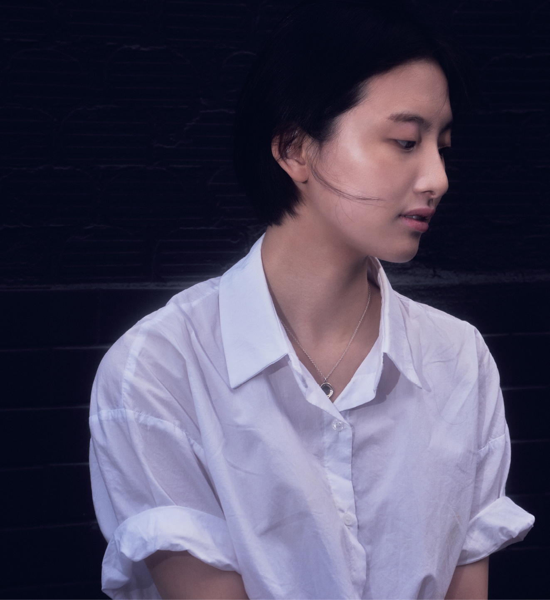
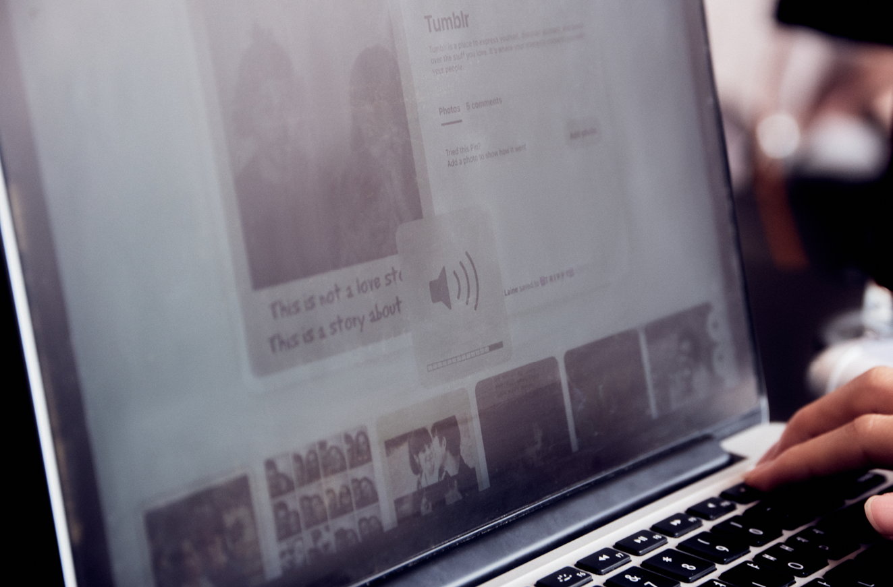
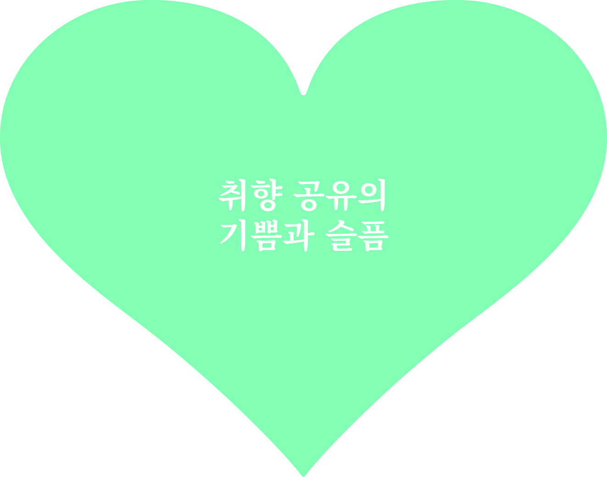
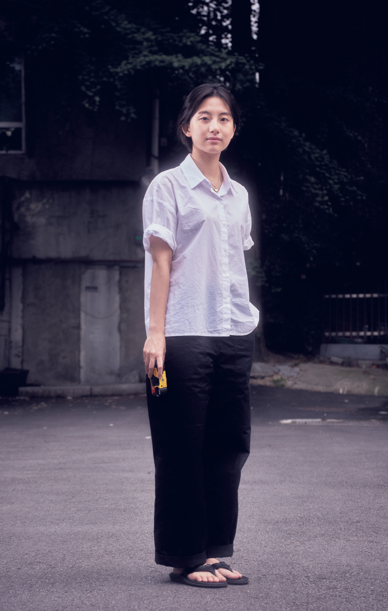

“취향은 정확하게 설명하기 어렵죠.
‘나는 이게 좋은데 넌 안 좋아?’
이렇게 밖에 이야기할 수 없는 거잖아요.”

01
함께 좋아하는, 시작
02
취향에서 브랜드로
03
직업과 프로젝트 구분
04
유튜브 플랫폼
05
취향 공유의 기쁨과 슬픔
06
영감
대학에서 만난 두 친구와 함께 주혜는 오드스튜디오서울을 운영중이다. 2021년 1월에 문을 연 오드스튜디오서울는 유튜브에 플레이스트를 업로드하고, 네이버스토어를 통해 휴대폰 액세서리를 제작 판매한다. 유튜브 플레이리스트가 빠른 구독자 증가를 보이며 성장하고 있지만
주혜는 브랜드 운영이 아닌 다른 진로를 탐색 중이다. 인터뷰를 하면서 처음엔 성장하고 있는 브랜드를 두고 새로운 진로를 탐색한다는 점이 의아했다. 왜 돈 버는 수단으로 가져가지 않느냐, 직업으로 가져갈 생각은 없는가에 대한 거듭된 의문에 주혜는 취향과 밀접한 이 일을 대하는 명확한 생각과 태도로 답했다. 그리고 다른 누구도 아닌 스스로를 위한 활동이라는 점에서 주혜는 오드스튜디오서울이 자신의 취향을 공유하고 자존감을 지켜주는 창구라고 말했다.
함께 좋아하는 시작
오드스튜디오서울을 세 분이서 함께 운영하시죠. 어떤 경험에서 ‘우리가 비슷한 취향을 갖고 있으니까 같이 일해보자.’라고 결정하게 되었는지 궁금해요.
대학교 동기인 친구와는 1학년 때부터 함께 프로젝트를 많이 했어요. 학교 주변 공간 큐레이팅, 독립 출판물, 그리고 교환학생도 같은 시기에 다녀왔어요. 제일 친한 친구이자 비슷한 게 많은 친구예요. 거기에 친한 후배도 같이 만나서 전시도 다니고 하면서 셋이서 친해졌고요.
작년에 친구가 스마트 스토어를 열고 싶다는 의견을 냈어요. 디자이너 브랜드를 살펴보니 20대 초반을 겨냥한 귀여운 브랜드나 아예 30대를 겨냥한 브랜드는 많은데 20대 후반에 돈은 많지 않지만 깔끔하고 클래식한 무드를 가진 브랜드는 잘 없더라고요. 세 명이서 되게 취향도 비슷하고 뭔가 좋아하는 것들도 비슷하다 보니 우리를 위한 브랜드를 만들어보고 싶었어요.
취향에서
브랜드로
초기에는 ‘우리가 좋아하는 거, 취향대로 해보자!’라는 마음에서 출발하신 것 같아요. 그런데 이를 유지하기 위해서는 에너지와 시간이 들죠. 이왕 하는 거 잘하고 싶고, 오리지널리티가 있었으면 좋겠고, 욕심이 많아지게 되잖아요.
맞아요. 결국 해보니까 그게 쉽지 않더라고요. 제품 제작하기 위해서 레퍼런스로 많이 찾아보고 디자인도 수없이 바꿨어요. 처음에는 쉽게 생각했지만 우리만의 오리지널리티가 있는 브랜드를 만들기 위해 마지막까지 고민 많이 했어요. 유튜브도 처음에는 우리가 좋아하는 거 올리는데 사실 많은 사람들이 좋아할 거라고 생각을 안 했어요. 그런데 생각보다 더 많은 사람들이 좋아해 주시니까 ‘아, 다른 사람들도 좋아해 줄 수 있구나.’라는 걸 알게 되었어요. 그리고 이 일로 일상에서 많은 힐링이 된다고 해야 되나요? 지난 학기에 저는 공부했고, 친구들은 취준하고 인턴도 지원했는데 모든 곳에서 좋은 응답이 오지는 않잖아요. 그럴 때 사실 많이 힘든데 유튜브 댓글로 좋은 말들을 해주시니까
저희 셋 다 맨날 “이게 우리의 자존감 지킴이다.”라고 해요. 그래서 더 잘하고 싶고 지속하게 되는 것 같아요. 최근에는 구독자가 많아지면서 사람들의 요구도 많아지고, 일이 무겁게 느껴져서 ‘이걸 올려도 되나?’하는 고민들이 많아졌어요. 뒤바뀌었다고 해야 되나요? 그냥 좋아서 올린 건데 사람들이 이렇다 저렇다 이야기하는 걸로 고민하는 제 모습을 보니까 내가 바라던 건 이런 게 아니었는데 하는 생각이 드는 거예요. 그래서 생각을 바꿨어요. 우리도 그냥 소비자일 뿐이고, 내가 잘나서 이걸 하는 게 아니라 그냥 비슷한 사람들 중 만드는 사람이니까요. 편하게 해야 듣는 사람도 편하게 느낄 것이라고 생각했어요. 어쨌든 좋아서 하고, 나도 좋기 위해서 하는 거니까요.

직업과 프로젝트
구분
유튜브가 잘 되고 인정도 받으니까 진로나 미래 계획을 이쪽으로 생각하지 않으셨을까 궁금했어요.
최근에 사춘기가 와서 고민을 많이 했어요. 지금은 어차피 대학원을 다니니까 프로젝트 형식으로 해보고 싶은 것들을 더 해보고 나서 결정하지 않을까 생각하고 있어요. 이거 하나 가지고 “나 너무 잘하는 것 같아.”하기엔 성급하니까요. 그리고 일로 가져간다면 클라이언트나 다른 사람들이 원하는 걸 만들어야 하는데 내가 좋아하는 것과 조율하기가 쉽지 않더라고요.
유튜브 플랫폼
직업과 프로젝트를 구분하고자 하는 이유가 있을까요? 둘의 차이점이 있을까요?
일은 큰 틀 안에서 일정한 역할을 해내고, 열심히 공부해온 것들을 써먹을 수 있는 것으로 하고 싶어요. 이 생각을 하게 된게, 미디어학과에서 공부를 하면서 콘텐츠를 만드는게 성실함으로만 되는 것은 아닌 것 같더라고요. 특히 유튜브 콘텐츠는 직관적인 측면이 크니까 열심히 해서 잘 된다기보다는 딱 봤을 때 괜찮다, 좋다 이런 느낌이 훨씬 더 중요한 것 같아요. 그래서 제가 열심히 하더라도 그만큼의 성과가 안나온다 라고 생각하는 때도 있는 것 같구요.

공부는 내가 이만큼 하면 이만큼이 나오잖아요. 근데 콘텐츠는 내가 이만큼 고민하고 시간을 쓰는 것보다는 하나의 좋은 아이디어나 포인트들이 오히려 더 큰 것들을 많이 가져오니까 이걸 업으로 삼기에는 되게 두렵다고 생각을 했었어요. 왜냐하면 안정적인 것들은 아니니까. 하지만 이런 걸 좋아하니까 프로젝트로 운영하고 있어요.
듣다 보니까 내가 일을 못했을 때의 좌절감과 내 취향이 타인에게 환영을 못 받거나 거부당했을 때의 좌절감은 다를 것 같다는 느낌이 들어요.
맞아요, 그렇게 느껴지게 되죠. 논리적으로 설명되는 것은 제가 그것을 강조나 강요를 해도 설명할 수 있는 건데 취향 은 정확하게 설명하기 어렵죠. ＂나는 이게 좋은데 넌 안 좋아?” 이렇게 밖에 이야기할 수 없는 거잖아요. 주변에 마케터분들을 보면 “우리 제품 좋아.” 이런 식으로 말하죠. 그게 멋있어 보이긴 하지만 저는 그렇게 안 하고 싶어요. “나는 이게 좋지만 너는 굳이 이걸 안 해도 괜찮아.”하고 싶어요. 그렇지만 다른 사람이 제 추천을 듣고 너무 좋다고 하면 기분이 너무 좋죠.

영감
영감은 어디서 받으시나요? 노래 선곡뿐 아니라 섬네일에 대한 칭찬도 댓글에 가득하더라고요.
유튜브 같은 경우에는 저희가 찍은 사진들에서 영감을 받아서 플레이리스트를 짜요. 노래는 평소에 많이 듣지만 여러 가지를 듣잖아요. 그래서 ‘플레이리스트 뭘 만들지?’했을 때 너무 추상적인데 사진을 보면 이런 느낌으로 만들어야지 하는 생각이 들어요. 셋이서 각자 찍은 사진들을 모아두는데 앨범을 보다가 “이 사진 너무 좋다.”하면 거기에 어울리는 콘셉트로 만드는 거죠.
그리고 저희는 세 명이다 보니까 돌아가서 해서 그게 너무 다행인 것 같아요. 세 명 취향이 다 비슷하지만 어쨌든 각자 좋아하는 장르가 다르거든요. 나는 이제 더 이상 새로운 게 없다 했는데 다른 친구가 “이거 좋더라!”하면 또 같이 들어보고… 셋이 비슷하지만 또 달라서 다채로운 걸 만들 수 있어요. 혼자였으면 절대 못했을 것 같아요.